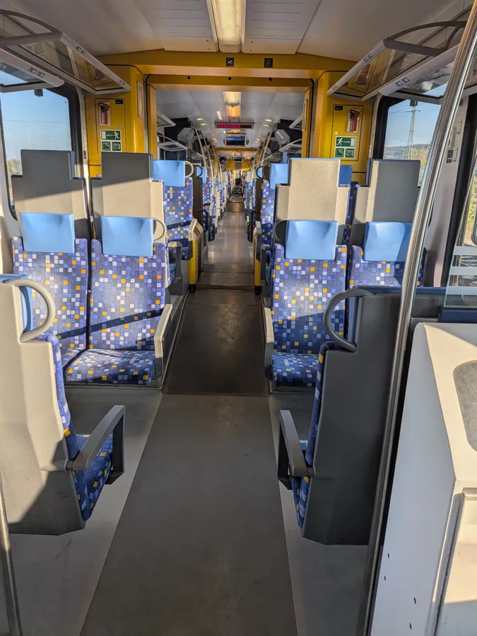
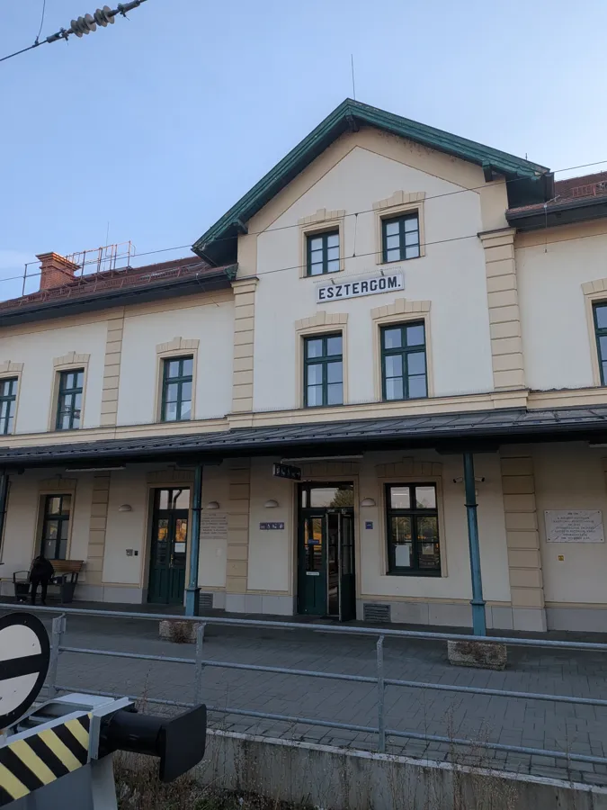
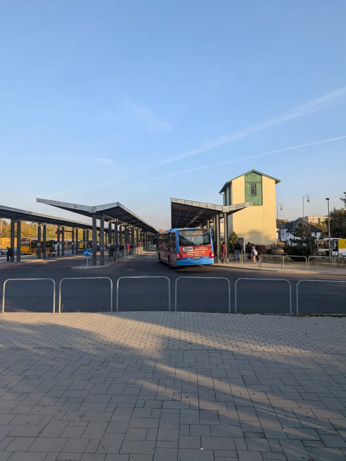
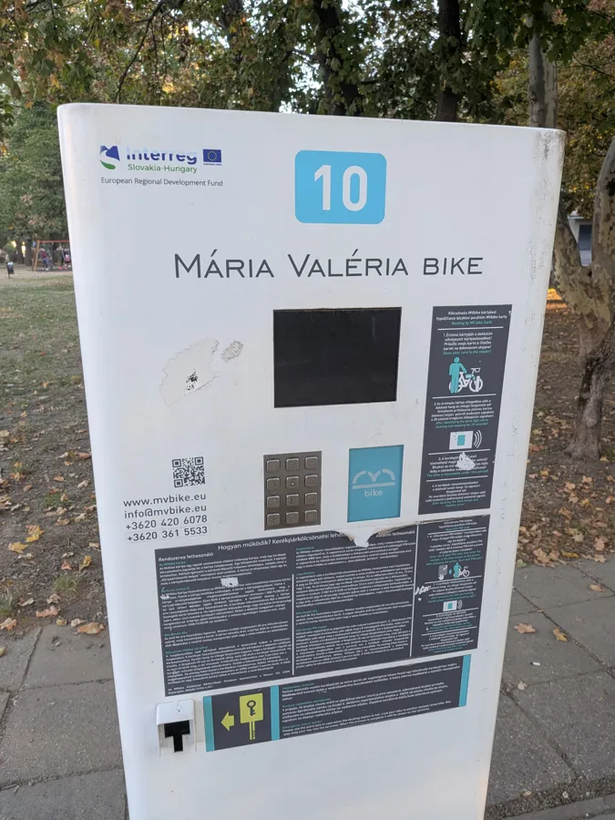
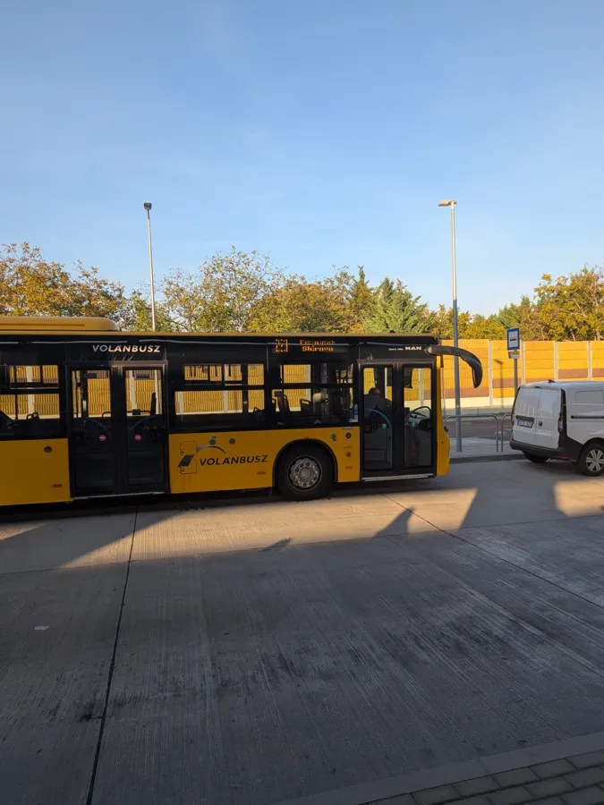
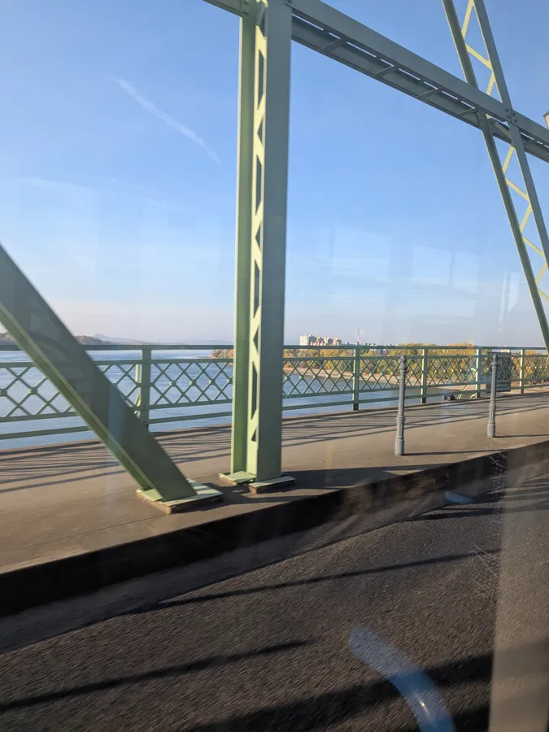
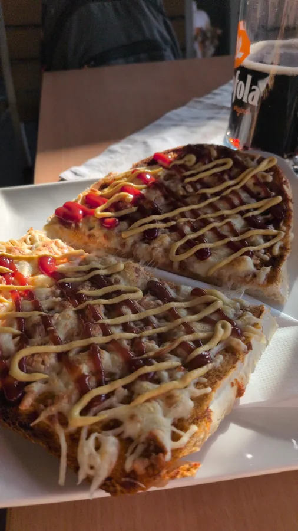
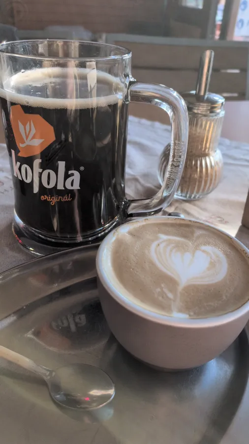

A Budapest tip: leave Budapest
Yes, really. Take a train out of town.
Here is a Budapest recommendation that tells you to leave Budapest. Every 30 minutes, a good, clean and comfortable train runs to Esztergom, a beautiful town on the Danube Bend, about an hour away.
Getting there: trains leave from Budapest-Nyugati (Western Railway Station, on the M3 metro) to Esztergom about every 30 minutes during the day, and the ride takes around an hour. Coming back is just as easy: trains run back from Esztergom to Nyugati at the same rhythm until late evening. A one-way ticket is roughly 1,100 to 1,300 forints (about 3 euros). Timetables and fares change, so check the exact times and today's price, or buy your ticket, on the MÁV ticket and timetable site or in the MÁV app. You can also buy at the machines and ticket windows at Nyugati.
🚆 Timetable: Nyugati → Esztergom 🚆 Timetable: Esztergom → Nyugati 🎫 MÁV tickets
Early for your train? Don't just wait on the platform: go and see the McDonald's at Nyugati, often called the most beautiful McDonald's in the world. It sits in the station's original 19th-century wing, with marble, chandeliers and high painted ceilings. Fast food has never looked this fancy.
Show 4 photos of Nyugati


Go for a morning that turns into an afternoon. You can rent bicycles and electric bikes very cheaply. Visit the Basilica and the old town center, then hop on a bike.
And the best part: you can bike over to Slovakia and have a beer or lunch over there, looking back at the Basilica. Two countries before lunch, and the only thing that crossed a border was you.
In Štúrovo (Párkány in Hungarian), sit down at Komp Café and order a hot sandwich, a cappuccino and a Kofola: the Czechoslovak answer to Coca-Cola, invented in the 1960s, less sweet and a bit herbal, and still beloved in Slovakia and Czechia, often on tap. The whole combo cost me less than 10 dollars.
Show 8 photos








Enjoyed this? Leave me a note.
Sign the guest book